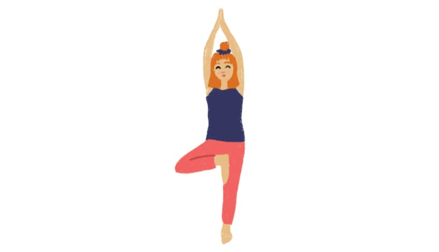
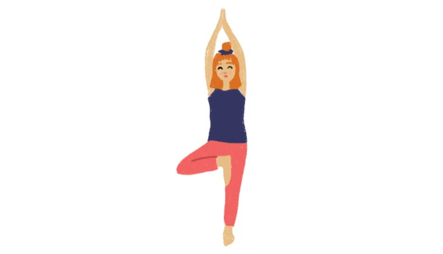

About Yoga
How does yoga work?
Yoga is a mind and body practice with a 5,000-year history in ancient Indian philosophy. Various styles of yoga combine physical postures, breathing techniques, and meditation or relaxation.
In more recent years, it has become popular as a form of physical exercise based upon poses that promote improved control of the mind and body and enhance well-being.
There are several different types of yoga and many disciplines within the practice. This article explores the history, philosophy, and various branches of yoga.
What is yoga?
In the modern world, the South Asian art of yoga has expanded to all corners of the globe.
While it is now a popular form of exercise and meditation, this has not always been the case.
Images on Yoga.
 

Steps
Click on the yoga pose to see the Steps

Bharadvaja’s Twist
Bharadvaja’s Twist
Step 1
Sit on the floor with your legs straight out in front of you. Shift over onto your right buttock, bend your knees, and swing your legs to the left. Lay your feet on the floor outside your left hip, with the left ankle resting in the right arch.
Step 2
Inhale and lift through the top of the sternum to lengthen the front torso. Then exhale and twist your torso to the right, keeping the left buttock on or very close to the floor. Lengthen your tailbone toward the floor to keep the lower back long. Soften the belly.
Step 3
Tuck your left hand under your right knee and bring your right hand to the floor just beside your right buttock. Pull your left shoulder back slightly, pressing your shoulder blades firmly against your back even as you continue to twist the chest to the right.
Step 4
You can turn your head in one of two directions: continue the twist of the torso by turning it to the right; or counter the twist of the torso by turning it left and looking over the left shoulder at your feet.
Step 5
With every inhalation lift a little more through the sternum, using the push of the fingers on the floor to help; with every exhalation twist a little more. Stay for 30 seconds to 1 minute, then release with an exhalation, return to the starting position, and repeat to the left for the same length of time.

Bridge Pose
Bridge Pose
Step 1
Lie supine on the floor, and if necessary, place a thickly folded blanket under your shoulders to protect your neck. Bend your knees and set your feet on the floor, heels as close to the sitting bones as possible.
Step 2
Exhale and, pressing your inner feet and arms actively into the floor, push your tailbone upward toward the pubis, firming (but not hardening) the buttocks, and lift the buttocks off the floor. Keep your thighs and inner feet parallel. Clasp the hands below your pelvis and extend through the arms to help you stay on the tops of your shoulders.
Step 3
Lift your buttocks until the thighs are about parallel to the floor. Keep your knees directly over the heels, but push them forward, away from the hips, and lengthen the tailbone toward the backs of the knees. Lift the pubis toward the navel.
Step 4
Lift your chin slightly away from the sternum and, firming the shoulder blades against your back, press the top of the sternum toward the chin. Firm the outer arms, broaden the shoulder blades, and try to lift the space between them at the base of the neck (where it’s resting on the blanket) up into the torso.
Step 5
Stay in the pose anywhere from 30 seconds to 1 minute. Release with an exhalation, rolling the spine slowly down onto the floor.

Cat Pose
Cat Pose
Step 1
Start on your hands and knees in a “tabletop” position. Make sure your knees are set directly below your hips and your wrists, elbows and shoulders are in line and perpendicular to the floor. Center your head in a neutral position, eyes looking at the floor.
Step 2
As you exhale, round your spine toward the ceiling, making sure to keep your shoulders and knees in position. Release your head toward the floor, but don’t force your chin to your chest.
Step 3
Inhale, coming back to neutral “tabletop” position on your hands and knees.
Step 4
This pose is often paired with Cow Pose on the inhale for a gentle, flowing vinyasa.

Cow Pose
Cow Pose
Step 1
Start on your hands and knees in a “tabletop” position. Make sure your knees are set directly below your hips and your wrists, elbows and shoulders are in line and perpendicular to the floor. Center your head in a neutral position, eyes looking at the floor.
Step 2
As you inhale, lift your sitting bones and chest toward the ceiling, allowing your belly to sink toward the floor. Lift your head to look straight forward.
Step 3
Exhale, coming back to neutral “tabletop” position on your hands and knees. Repeat 10 to 20 times.
Step 4
This pose is often paired with Cat Pose on the exhale for a gentle, flowing vinyasa.

Chair Pose
Chair Pose
Step 1
Stand in Tadasana. Inhale and raise your arms perpendicular to the floor. Either keep the arms parallel, palms facing inward, or join the palms.
Step 2
Exhale and bend your knees, trying to take the thighs as nearly parallel to the floor as possible. The knees will project out over the feet, and the torso will lean slightly forward over the thighs until the front torso forms approximately a right angle with the tops of the thighs. Keep the inner thighs parallel to each other and press the heads of the thigh bones down toward the heels.
Step 3
Firm your shoulder blades against the back. Take your tailbone down toward the floor and in toward your pubis to keep the lower back long.
Step 4
Stay for 30 seconds to a minute. To come out of this pose straighten your knees with an inhalation, lifting strongly through the arms. Exhale and release your arms to your sides into Tadasana.

Cobra Pose
Cobra Pose
Step 1
SLie prone on the floor. Stretch your legs back, tops of the feet on the floor. Spread your hands on the floor under your shoulders. Hug the elbows back into your body.
Step 2
Press the tops of the feet and thighs and the pubis firmly into the floor.
Step 3
On an inhalation, begin to straighten the arms to lift the chest off the floor, going only to the height at which you can maintain a connection through your pubis to your legs. Press the tailbone toward the pubis and lift the pubis toward the navel. Narrow the hip points. Firm but don’t harden the buttocks.
Step 4
Firm the shoulder blades against the back, puffing the side ribs forward. Lift through the top of the sternum but avoid pushing the front ribs forward, which only hardens the lower back. Distribute the backbend evenly throughout the entire spine.
Step 5
Hold the pose anywhere from 15 to 30 seconds, breathing easily. Release back to the floor with an exhalation.

Corpse Pose
Corpse Pose
Step 1
In Savasana it’s essential that the body be placed in a neutral position. Sit on the floor with your knees bent, feet on the floor, and lean back onto your forearms. Lift your pelvis slightly off the floor and, with your hands, push the back of the pelvis toward the tailbone, then return the pelvis to the floor. Inhale and slowly extend the right leg, then the left, pushing through the heels. Release both legs, softening the groins, and see that the legs are angled evenly relative to the mid-line of the torso, and that the feet turn out equally. Narrow the front pelvis and soften (but don’t flatten) the lower back.
Step 2
With your hands lift the base of the skull away from the back of the neck and release the back of the neck down toward the tailbone. If you have any difficulty doing this, support the back of the head and neck on a folded blanket. Broaden the base of the skull too, and lift the crease of the neck diagonally into the center of the head. Make sure your ears are equidistant from your shoulders.
Step 3
Reach your arms toward the ceiling, perpendicular to the floor. Rock slightly from side to side and broaden the back ribs and the shoulder blades away from the spine. Then release the arms to the floor, angled evenly relative to the mid-line of torso. Turn the arms outward and stretch them away from the space between the shoulder blades. Rest the backs of the hands on the floor as close as you comfortably can to the index finger knuckles. Make sure the shoulder blades are resting evenly on the floor. Imagine the lower tips of the shoulder blades are lifting diagonally into your back toward the top of the sternum. From here, spread the collarbones.
Step 4
In addition to quieting the physical body in Savasana, it’s also necessary to pacify the sense organs. Soften the root of the tongue, the wings of the nose, the channels of the inner ears, and the skin of the forehead, especially around the bridge of the nose between the eyebrows. Let the eyes sink to the back of the head, then turn them downward to gaze at the heart. Release your brain to the back of the head.
Step 5
Stay in this pose for 5 minutes for every 30 minutes of practice. To exit, first roll gently with an exhalation onto one side, preferably the right. Take 2 or 3 breaths. With another exhalation press your hands against the floor and lift your torso, dragging your head slowly after. The head should always come up last.

Cow Face Pose
Cow Face Pose
Step 1
Sit in Dandasana (Staff Pose), then bend your knees and put your feet on the floor. Slide your left foot under the right knee to the outside of the right hip. Then cross your right leg over the left, stacking the right knee on top of the left, and bring the right foot to the outside of the left hip. Try to bring the heels equidistant from the hips: with the right leg on top you’ll have to tug the right heel in closer to the left hip. Sit evenly on the sitting bones.
Step 2
Inhale and stretch your right arm straight out to the right, parallel to the floor. Rotate your arm inwardly; the thumb will turn first toward the floor, then point toward the wall behind you, with the palm facing the ceiling. This movement will roll your right shoulder slightly up and forward, and round your upper back. With a full exhalation, sweep the arm behind your torso and tuck the forearm in the hollow of your lower back, parallel to your waist, with the right elbow against the right side of your torso. Roll the shoulder back and down, then work the forearm up your back until it is parallel to your spine. The back of your hand will be between your shoulder blades. See that your right elbow doesn’t slip away from the right side of your torso.
Step 3
Now inhale and stretch your left arm straight forward, pointing toward the opposite wall, parallel to the floor. Turn the palm up and, with another inhalation, stretch the arm straight up toward the ceiling, palm turned back. Lift actively through your left arm, then with an exhalation, bend the elbow and reach down for the right hand. If possible, hook the right and left fingers.
Step 4
Lift the left elbow toward the ceiling and, from the back armpit, descend the right elbow toward the floor. Firm your shoulder blades against your back ribs and lift your chest. Try to keep the left arm right beside the left side of your head.
Step 5
Stay in this pose about 1 minute. Release the arms, uncross the legs, and repeat with the arms and legs reversed for the same length of time. Remember that whichever leg is on top, the same-side arm is lower.

Gate Pose
Gate Pose
Step 1
Kneel on the floor. Stretch your right leg out to the right and press the foot to the floor, or use a block for extra support if you can’t reach. Keep your left knee directly below your left hip (so the thigh is perpendicular to the floor), and align your right heel with the left knee. Turn your pelvis slightly to the right (so the left hip point comes forward of the right), but turn your upper torso back to the left. Point the kneecap toward the ceiling, which will require you to turn your right leg out.
Step 2
As you inhale, bring your arms out to your sides, parallel to the floor, palms down. Bend to the right over the plane of the right leg and lay your right hand down on the shin, ankle, or the floor outside the right leg. Contract the right side of the torso and stretch the left. Place your left hand on the outer left hip and push the pelvis down toward the floor. Then slip the hand up to the lower left ribs and lift them toward the shoulder, creating space in the left waist.
Step 3
With an inhalation, sweep the left arm over the back of the left ear. The side bend tends to drop the torso toward the floor. Without pushing the left hip back (continue to roll it slightly forward), turn the upper torso away from the floor.
Step 4
Stay in this pose anywhere from 30 seconds to a minute. Come up as you inhale, reaching through the top arm to draw the torso upright. Bring the right knee back beside the left, and repeat with the legs reversed.
Full Pose
Full Parighasana is a deep side bend. From the starting position described in Step 2 above, lean to the side over the straight leg. Lower the underside of the torso as close as possible to the top of the straight leg. Press the back of the lower hand on the top of the foot, then sweep the top arm over the back of the ear and join the palms. Finish as described in Step 4 above.
Benefits
Benefits of Yoga for Kids
There are innumerable benefits that yoga has for kids when practised regularly. Here are a few of them:
It can be an effective calming technique for kids. A simple exercise of observing their breathing pattern can improve their focus, attention and calmness.
It can help them build a positive self-image about their body and give them a control of their flexibility and agility.
Asanas like the suryanamaskar improve their ability to balance their body which indirectly acts as a meditative posture for them.
Holding the focus to stay in a certain posture is especially good for kids as they take their baby steps towards achieving self-control.
Channelised breathing patterns, prescribed in the various pranayamas, boost the immunity and energise the body. This protects them from upper respiratory problems that have become a common problem among children today.
Some asanas improve the core strength immensely, correcting their postural problems.
Some yoga postures are specifically designed for children with autism spectrum disorders to meet their special therapeutic needs.
Benefits of Yoga for Elders
Retirement is the perfect time to try some new things and pick up some healthier habits you may not have had time to consider in your working years. If you’ve never tried yoga before, check out a class and experience some of the benefits of yoga for seniors like:
Strengthened bones. Yoga for seniors can help prevent the onset of osteoporosis, which causes bones to become brittle or weak. Osteoporosis occurs when the creation of new bone can’t keep up with the decrease of bone mass and density that occurs with aging.
Reduced stress. Yoga offers a relaxing way to let go of the tension you’re holding in your body, especially in your shoulders and upper back. It’s been known to help relieve some of the stresses that lead to hypertension, which in turn leads to not needing as many medications on a daily basis. Yoga also helps reduce anxiety, lowering your heart rate, blood pressure, and helping you breathe easier.
Improved sleeping habits. Because yoga for seniors can be so relaxing, many individuals report that they are sleeping longer and more soundly, which can often be an issue for older adults.
Enhanced balance, flexibility, mobility and strength. The slow, measured movements involved with yoga poses can lead to better balance and movement, which can also help prevent falls. As falls are the leading cause of injury among seniors, yoga helps provide the tools you need to improve your mobility so you can get around more safely.
Lessen the risk for depression. Yoga is a mood-booster; the combination of movement, breathing and meditation can create an overall sense of well-being. Plus, because yoga is done in a class setting with your peers, you’re getting the benefit of staying socially active, as well.
Alleviate aches and pains. Even if you have some physical limitations, yoga can help ease the aches and pains associated with aging. Yoga can be especially beneficial to those suffering from osteoarthritis, teaching you how to breathe and relax through any chronic pain you may be dealing with.
If you’re interested in trying out a yoga class, make sure you do a little research before you jump right into it. Many senior centers offer yoga especially for older adults, and these instructors will be well-versed in the techniques most beneficial to seniors.
Try a gentle class for beginners and if any of the poses are uncomfortable or lead to pain, know your limits. No matter what your current fitness level is, seniors can benefit from yoga every bit as much as younger adults.